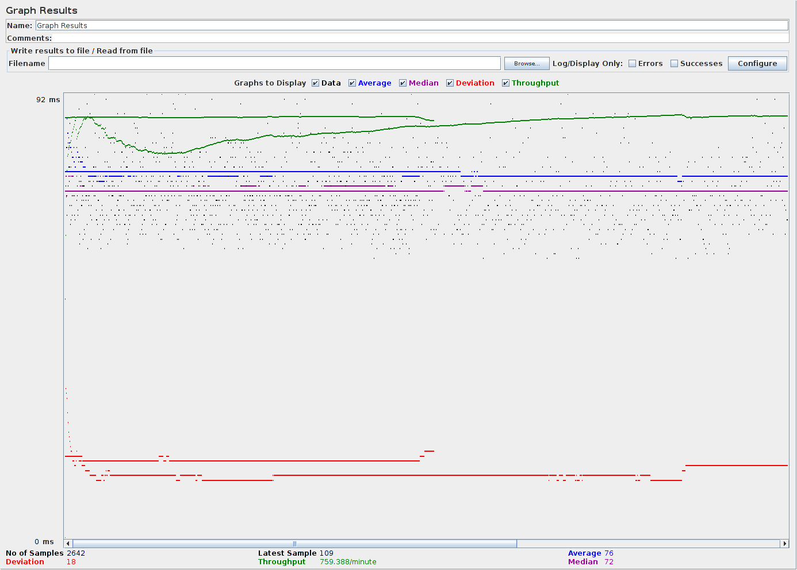
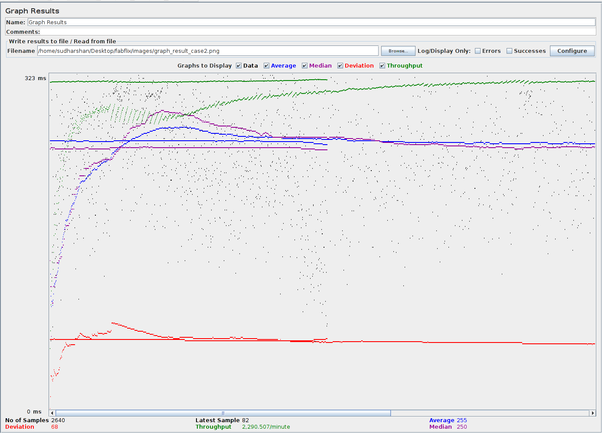
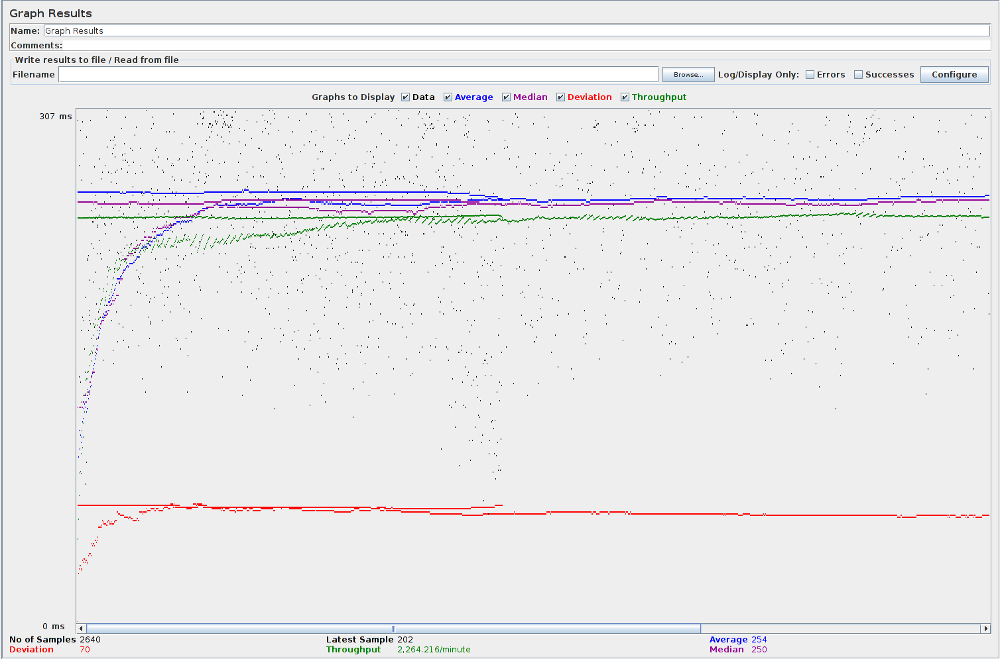
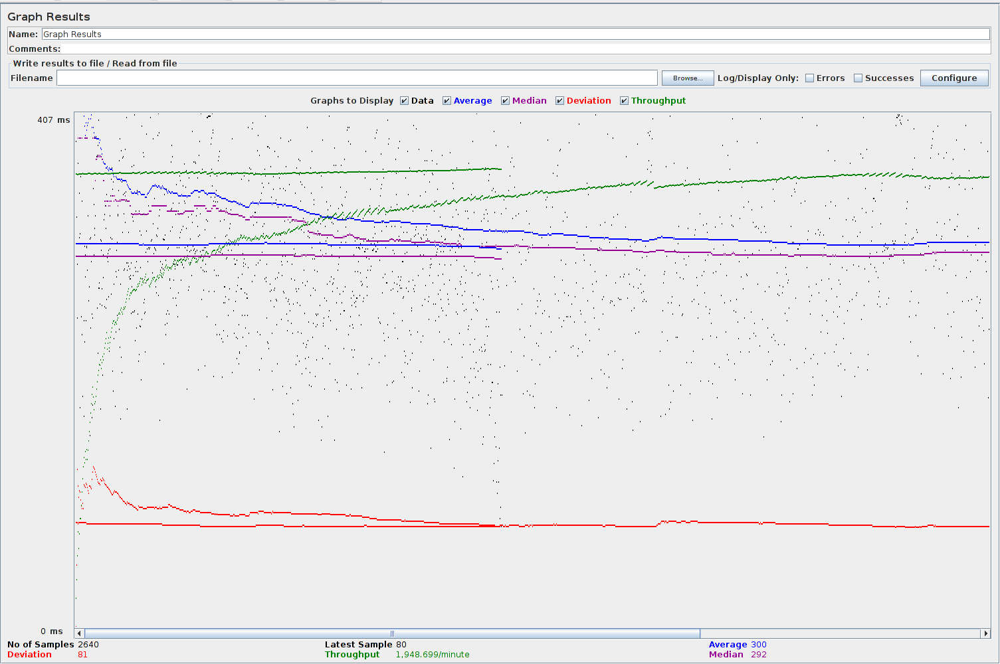
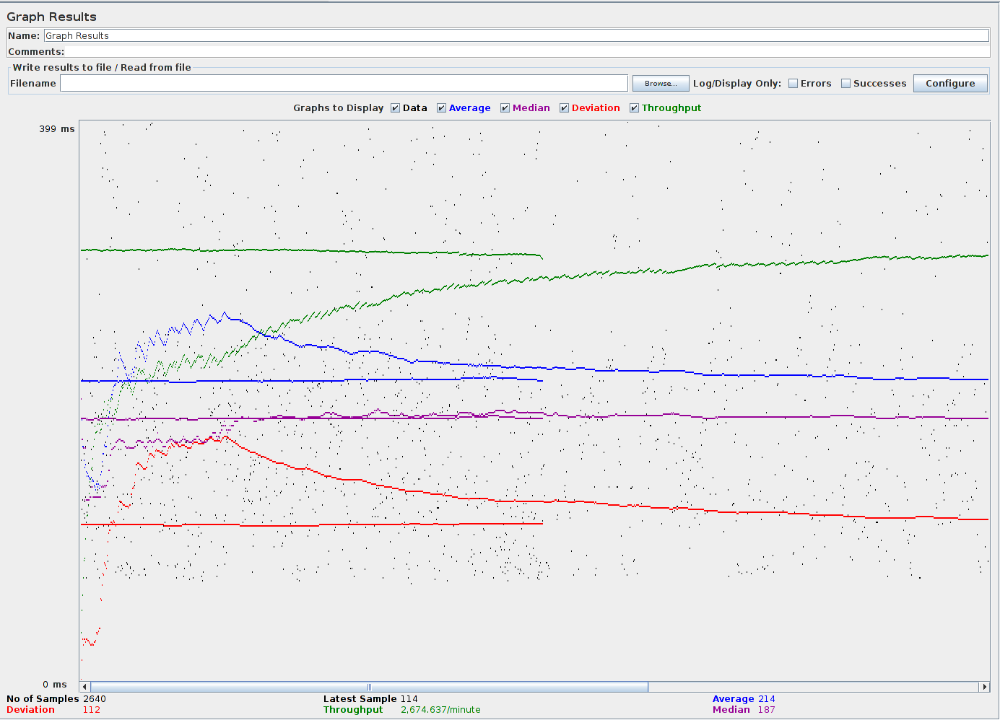

| Single-instance version cases |
Graph Results Screenshot |
Average Query Time(ms) |
Average Search Servlet Time(ms) |
Average JDBC Time(ms) |
Analysis |
| Case 1: HTTP/1 thread |
 |
76 ms |
25 ms |
25 ms |
Throughput is 759.388 transactions/minute which is roughly 12.6 requests per second. |
| Case 2: HTTP/10 threads |
 |
255 ms |
201 ms |
201 ms |
Throughput is 2290.507 transactions/minute which is roughly 38 requests per second. As number of users increase the throughput also increases. |
| Case 3: HTTPS/10 threads |
 |
262 ms |
204 ms |
204 ms |
Throughput is 2228.851 transactions/minute which is roughly 37 requests per second. As compared to http requests, the https requests takes longer response time for the initial requests. AS it goes on, due to prepared statements the responses get shorter. |
| Case 4: HTTP/10 threads/No prepared statements |
 |
254 ms |
196 ms |
196 ms |
Throughput is 2264.216 transactions/minute which is roughly 37.7 requests per second. |
| Case 5: HTTP/10 threads/No connection pooling |
 |
300 ms |
243 ms |
243 ms |
Throughput is 1948.699 transactions/minute which is roughly 32 requests per second. Without connection pooling the connection to databases takes much longer and hence the response time increases and throughput decreases. |
| Scaled version cases |
Graph Results Screenshot |
Average Query Time(ms) |
Average Search Servlet Time(ms) |
Average JDBC Time(ms) |
Analysis |
| Case 1: HTTP/1 thread |
 |
90 ms |
29 ms |
29 ms |
Throughput is 648.532 transactions/minute which is roughly 11 requests per second. Since scaled version has to go through the load balancer there is a delay in the responses. |
| Case 2: HTTP/10 threads |
 |
214 ms |
137.5 ms |
137.5 ms |
Throughput is 2674.637 transactions/minute which is roughly 44.6 requests per second. As the number of users increase, the performance of scaled version is better than single isntance version. The scaled version handles requests better by balancing the load. |
| Case 3: HTTP/10 threads/No prepared statements |
 |
220 ms |
145.5 ms |
145.5 ms |
Throughput is 2539.235 transactions/minute which is roughly 42 requests per second. As the number of users increase, the performance of scaled version is better than single isntance version. The scaled version handles requests better by balancing the load. |
| Case 4: HTTP/10 threads/No connection pooling |
 |
218 ms |
143.5 ms |
143.5 ms |
Throughput is 2586.418 transactions/minute which is roughly 43 requests per second. As the number of users increase, the performance of scaled version is better than single isntance version. The scaled version handles requests better by balancing the load. |